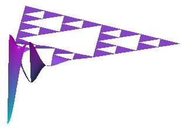

|  | Outer Approximation:Approximating the Laplacian on Fractal Domains as a Limit of the Plane Laplacian on Domains Approaching the Fractal |
This page is intended as a summary and data repository for work done as part of a Research Experience for Undergraduates (REU) at Cornell University during the summer of 2005. Work on this project was done by Tyrus Berry (4th year undergraduate at the University of Virginia as of Fall 2005 - thb9d@virginia.edu) as part of the ongoing analysis on fractals research of Dr. Robert Strichartz (str@math.cornell.edu) of Cornell University. Below you will find links to pages specific to different fractals that include raw data (eigenvalues and eigenfunctions of the Laplacian via the outer approximation), Matlab code used to obtain the data, and some brief data analysis.